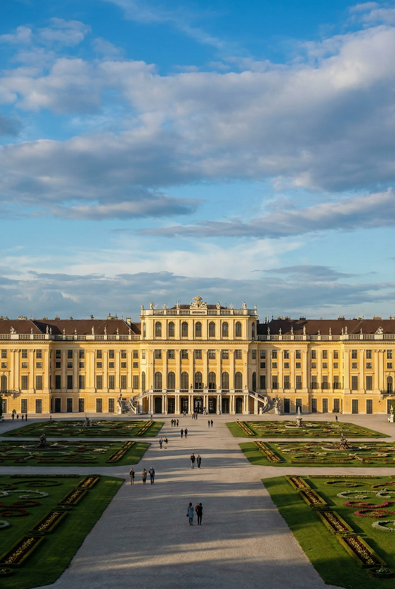
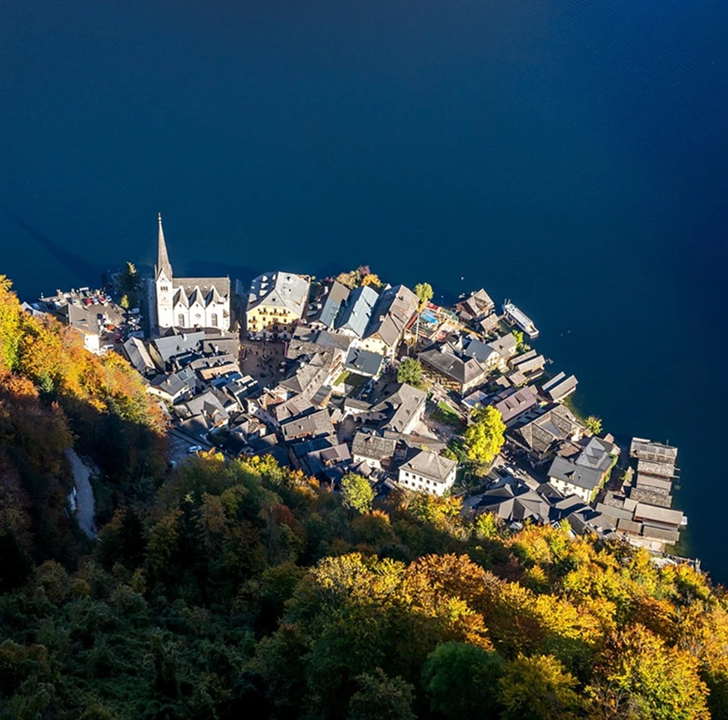
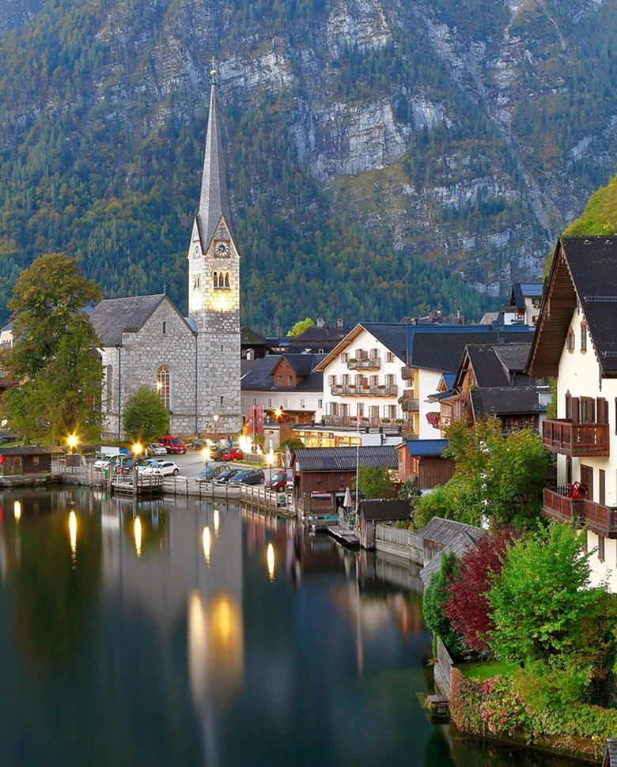
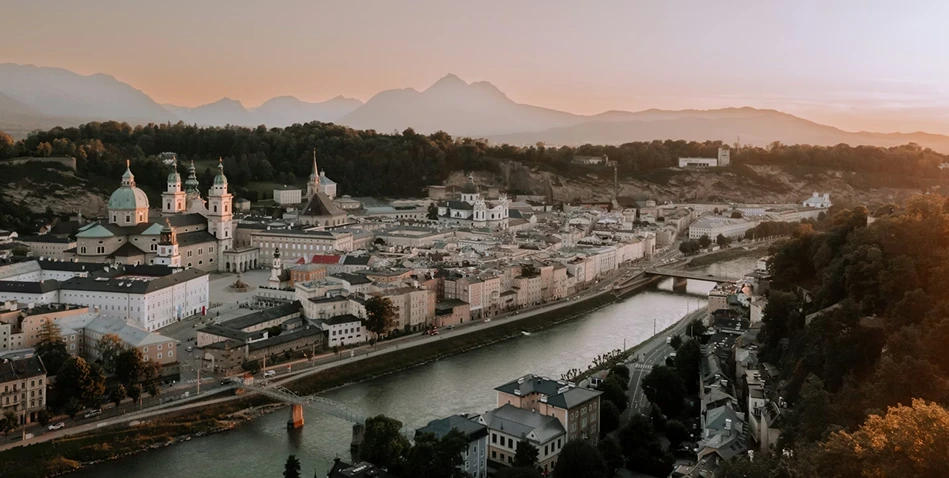
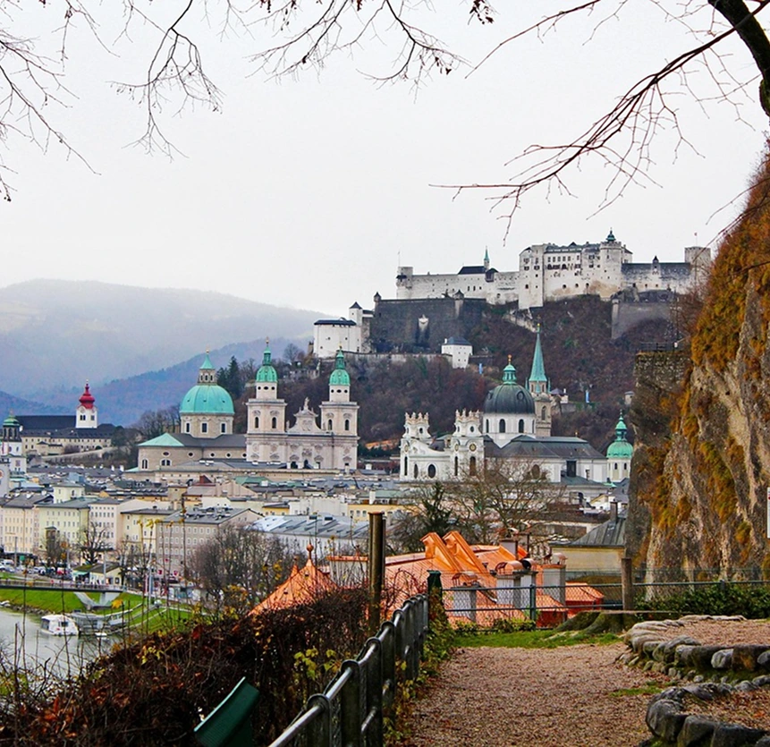

TOP DESTINATIONS TO EXPLORE
VIENNA: The Imperial Symphony
Vienna is a city where history and modernity live in perfect harmony. As the former heart of the Habsburg Empire, its streets are lined with magnificent baroque palaces and imperial gardens that tell stories of a golden age. But don't let the history fool you; Vienna is also a vibrant hub of contemporary art, world-class gastronomy, and a legendary coffee house culture that invites you to slow down and savor the moment.
Stroll through the MuseumQuartier, visit the iconic St. Stephen's Cathedral, or lose yourself in the grandeur of Schönbrunn Palace.Whether you are attending a gala at the State Opera or exploring the trendy bars along the Danube Canal, Vienna offers an elegant yet pulsing energy that captures the soul of every traveler.
Imperial Palaces

Classical Music
Coffee Culture
An unforgettable journey where imperial grandeur meets alpine serenity. The curated routes allowed us to experience the heart of Austria far beyond the typical tourist spots.


HALLSTATT: The Alpine Fairy Tale
Nestled between the glass-like Hallstätter See and the towering Dachstein mountains, this UNESCO World Heritage village is the definition of picturesque. Wander through its narrow 16th-century streets, where every corner looks like a postcard, and discover why it is considered one of the most beautiful lakeside towns in the world.
"In Hallstatt, time doesn’t just slow down; it feels like it
has finally found its home."
Elias M., Travel Photographer
The destinations are breathtaking and the itineraries are very well structured. However, I found some of the ‘hidden’ spots in Hallstatt a bit crowded during midday.
Beyond its stunning views, Hallstatt holds deep historical roots as home to the world’s oldest salt mine. Whether you are taking a boat ride to capture the iconic skyline or ascending to the Skywalk, Hallstatt offers a serene escape. Or truly embrace the magic of the region, take a moment to explore the hidden paths that lead away from the shore and into the heart of the village.
Or truly embrace the magic of the region, take a moment to explore the hidden paths that lead away from the shore and into the heart of the village. The whispers of the past are everywhere from the ancient ossuary at St. Michael's Chapel to the traditional wooden balconies adorned with blooming flowers.
Lakeside Views
Salt Mines
Skywalk roads

The attention to detail in the Salzburg guide is insane. It felt like having a local friend guiding me the whole time. For me is a must when visiting.


SALZBURG: The Stage of the World
Known worldwide as the birthplace of Mozart and the iconic setting for 'The Sound of Music', Salzburg is a city where art and architecture take center stage. Its perfectly preserved Altstadt (Old Town), a UNESCO World Heritage site, is a baroque masterpiece dominated by the majestic Hohensalzburg Fortress that overlooks the city.
Stroll through the Mirabell Gardens, where history and nature bloom together, or lose yourself in the narrow Getreidegasse with its traditional wrought-iron signs. Salzburg offers a dramatic alpine backdrop that blends cultural sophistication with a raw, untouched natural beauty.
“Walking through Salzburg is like listening to a symphony you
never want to end”.
Sophie L., Classical Musician
Mozart's Legacy
Baroque Gardens
Coffee Culture
The curated routes took me to spots I never would have found on my own. Crossing the Alps with their e-bike tour was, hands down, the highlight of my year. Pure magic!
